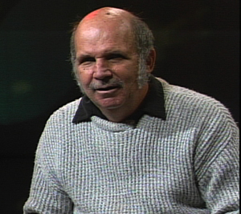
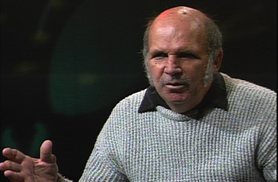
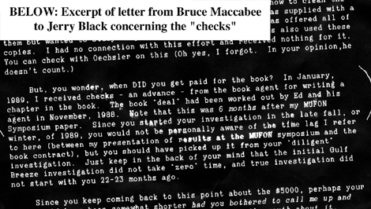

| UFOlogical "Mystery Payments" AN INTERVIEW WITH JERRY BLACK Jerry says that Gulf Breeze mystery payments and aone-sided investigation has led to an embarrassment for UFOlogy By Kenny Young The interview takes place in the television studios of the CommunityProgram Center, a cable access facility near Covington, Kentucky. Jerryseats himself on a stool in front of a large black curtain and prepareshimself for the interview as the studio lights blare to life. As the technicalassistant helps J erry 'mike-up,' he proudly holds out a copy of a postcardhe once received from Ed Walters, and also one page from a letter to himby Bruce Maccabee. These two items, and many others, proves to him thatthe case is a fraud. "Can we get an audio check please?" came the voice of the technicianover the studio intercom. "Testing, one two three," Jerry said in compliance. "Gulf Breezeis a hoax and the investigators who handled that case did a lousy job,they are an embarrassment to UFOlogy." Although Jerry was having fun with the technician testing hismicrophone, he is more than a little serious about the Gulf Breeze case,his convictions are well known. And in case you don't know his position,he would be more than happy to tell you. KENNY YOUNG: Why does Gulf Breeze remain controversial today? JERRY BLACK: I think the only reason Gulf Breeze remains controversialis because it was very poorly investigated from the beginning on. The MUFONorganization did not handle the case properly. Many of the investigatorsin the Gulf Breeze area were new investigators. Certainly Mr. Walt Andrusdid not take charge and lead these investigators. Mr. Ray Fowler, who wasMUFON's Director of Investigations, never worked on Gulf Breeze at all.I find that unusual. In reality, I think the Gulf Breeze case could havebeen handled much more efficiently had the investigators been seasonedinvestigators and been led properly by someone who had experience, suchas Mr. Walt Andrus, but he certainly failed in that responsibility. KY: That leads into my next question, which would have been the competencyof the investigators who were interested in Gulf Breeze... |
KY: You have been one of the most aggressive investigators to delveinto the Gulf Breeze story. What draws you to the Gulf Breeze case eventoday? What is the attraction to what is apparently such a poor and obvioushoax-case?
JB: I became involved in the case shortly after 1990 when I beganto realize that all these pictures had come forth from Ed Walters and yetthinking back through all the years of UFOlogy, we've never had a personpresent that many pictures and be considered a valid case; George Adamskibeing a good example, Daniel Frye and others. So I thought this was a uniqueand tremendous situation, here was a man who took picture after pictureof alleged UFOs and had actually been abducted, according to his testimony.It didn't take long after being involved in the case to learn that therewere a lot of holes in the story. So I contacted Polaroid to learn moreabout the Polaroid camera that Ed had used, and they put me in touch withWilliam G. Hyzer, a top-notch photoanalyst and James B. Hyzer, they workedtogether. Upon calling him, he was intrigued that this was a UFO pictureand he had never before handled or worked with a UFO picture. He was interestedand agreed to undertake analysis, waiving his $200 per hour fee. The credentialsof Hyzer are unbelievable, but he is probably one of the top ten photoanalystsin the country. So I was able to obtain his services, and there is an additionalstory behind that. I contacted Walt Andrus and told him that we could geta second-opinion of Ed Walter1s photos from Hyzer. Andrus agreed, but aftera few months of not hearing from him, I called him up and asked if Hyzerhad begun looking at the pictures, and he said: "Jerry, I have a bulletinto get out, we1ve doubled our membership and I'm very busy," I told himthat I understood but I did send a couple of the MUFON journals with thepictures on the cover to Mr. Hyzer, and he said that by looking at thepictures that they weren't hoaxed photographs. Walt Andrus very quicklysaid "Really? He couldn't say they were hoaxed?" I told him that Hyzercouldn't say they were hoaxed simply by looking at the front page of thejournal. Within 24-hours, Walt Andrus had sent copies of ten pictures toHyzer, I found that to be very interesting. You might say it was a wayof tricking Andrus to Hyzer, which I believe that he later regretted doing.
KY: Does the Hyzer analysis today stand as the definitive conclusionto the Ed Walters case?
JB: It depends on who you talk to. Again, the MUFON organization,under the direction of Walt Andrus, certainly did not accept the Hyzerreport as being the definitive report on the Gulf Breeze case. They, untilAndrus' retirement, continued to support the Ed Walters case and his photographsand claim of abduction. Most UFOlogists, including some people who haveleft MUFON, do not feel the case is real. Consequently, it's a dividedcommunity. The evidence is overwhelming in my opinion after 4 1/2 yearsof investigating the case with Rex Salisberry and his wife Carol and ZanOverall, that the Gulf Breeze photos are hoaxed. Hyzer said that on Photograph#19, the famous 'road shot,' Hyzer said conclusively in his final reportthat Photograph #19 was a double exposure. With his technical capabilityand experience, I value the Hyzer analysis. All other Gulf Breeze photographsmust be considered suspicious, the whole case is a hoax from beginningto end.
KY: Ed Walters and the Gulf Breeze situation was glorified in thebook "UFOs, Here's The Proof"co-authored by Ed Walters and Bruce Maccabee.What are your feelings on an investigator collaborating with a claimantin this manner, and why would Dr. Maccabee be such a proponent of Ed Waltersdespite the Hyzer analysis?
JB: There are some hot ethical issues involved here. In myopinion, it's wrong. In this particular case, it is especially wrong becauseEd Walters had not even started his second book when Bruce Maccabee accepteda $20,000 fee for writing a chapter in the book. What we must rememberhere, and some people are not aware of this, that $20,000 (less $2,000for agents fee, let's be fair) that $18,000 came out of Ed Walters' pocket.That money was taken out of his advance. Once he had accepted that $18,000,he became too close to Ed Walters to objectively investigate the case anyfurther. When you get $18,000 from a person, you'll have some hesitancyto say anything bad about the photos or the person, it's human nature.Had I been in charge of MUFON at that time and learned that Bruce Maccabeehad accepted this money, I would have taken him off the case for conflictof interest reasons. As I said, I have a post-card from Ed Walters thatstates that much earlier than the book, Maccabee accepted a professionalfee in July of 1988 of an undisclosed amount of money, just before Maccabeewas to speak at the '88 MUFON symposium in support of the Ed Walters photos.
KY: So you are saying that Maccabee's acceptance of all this moneyhad distracted him from being an objective investigator?
JB: Totally, absolutely. That kind of money, and we don't know thereal amount, would distract anyone. Maccabee has denied that he receivedanything other than the $18,000 from the book, there's no amount listedfor this 'professional fee' that Ed Walters makes reference to in thispost card. It would be fair to say this professional fee may well havebeen in the 10 to 20-thousand dollar range, especially when you considerthat Bob Oechsler, who also worked on the Gulf Breeze case, and supportedEd Walters, personally told me that he received $5,000 for some work doneon the original photographs that Ed Walters took. Now that's a lot of moneyfor work on photographs and I don't know what he actually did, but thatwork was not turned over for Hyzer's consideration. Certainly that $5,000that Oechsler took home did not advance our understanding of the Ed Waltersphotos. It is my opinion that Ed Walters probably made a very healthy financialdonation to the MUFON general fund sometime between 1988 and 1989. I'venever been able to find out from MUFON, but that is certainly mysuspicion.
KY: The UFO research community is, by and large, comprised of a volunteerwork force of people who pursue the UFO topic out of personal, not professionalinterest. Do you believe that these ethical issues that you are raisinghere, and the misconduct of the Gulf Breeze researchers as you charge,reflects on all of the UFO research community?
JB: Oh, certainly it does. A lot of people had lost a lot of respectfor the entire UFO community when the Gulf Breeze case was touted by andsupported by the entire MUFON organization, even though many people couldsee the discrepancies in the case and the Hyzer case, stating from thebeginning, that there were signs of double exposure. Why did Maccabee'sreport never make mention of the double exposure potential or imply thatthey were double exposures? Yet Hyzer said that all ten photos he was givenshowed signs of double exposed. Yes, this case is an absolute embarrassmentto the UFO community. Dennis Stacey, who has since left MUFON, has clearlystated that he is not supportive of the Ed Walters case and never was.Walt Andrus and Bruce Maccabee are total embarrassments to the UFO community.Was Maccabee influenced by two payments he received from Ed Walters? You'llhave to be the judge of that, but as Maccabee even admits, Hyzer's credentialsare far, far superior to his own. So why would Hyzer say they are hoaxedand Maccabee say they are not? Is it the money? I don't know, you1ll haveto ask Bruce Maccabee.
KY: Did you ever try to do that?
JB: No I did not. I have been in touch with him through tapes I sentthrough to him but never did contact him personally. He has completelydenied receiving any second payment from Ed Walters. But the postcard thatI have from Ed Walters clearly shows that Bruce Maccabee received a secondpayment - a professional fee as it were - for work done up until the timeof July, 1988. I'm sure Maccabee would deny this. You see, when I sentaudio tapes to Walters and Maccabee, I was very angry and stated on thetape how I knew that Walters had paid Maccabee an amount of $20,000 forwriting a chapter in the book. For whatever reason, Walters may have beenunder the impression that the payment was not common knowledge. So I thinkWalters was trying to deny that he paid him $20,000 for the book effort,but on the other hand he was admitting that he did pay him a professionalfee in July of 188 of an 'undisclosed amount of money.' That's what thispostcard shows. It then appears that Ed Walters realized the 'professionalfee' he paid in July of 1988 might come back to haunt Bruce Maccabee. Hethen writes a fictitious insert to show that Maccabee was paid in Decemberof 1989. Note the paragraph on page 4 of a 12-page letter sent to me fromBruce Maccabee that states he received checks from a book agent in Januaryof 1989. Whichever date you accept from Ed Walters' postcard as being correct,either date is at least 11-months away from when Maccabee received paymentsfrom the book agent. It appears they were not on the same wavelength, andhad they got together before he sent the postcard, we may have never knownof this second payment. Further, Ed Walters told Rex Sailsberry, earlyon in the investigation, that he had paid monies to the MUFON organizationto support the Gulf Breeze investigation and had shared part of his proceedsof his book royalties with Bruce Maccabee. MUFON did not disclose thisinformation to the general public and certainly they should have. It1sanother case where Ed Walters was using his money to gain support fromUFO investigators.
KY: Thankfully, interest in the Gulf Breeze UFO situation of thelate 80s and early 90s have waned in recent years. While the sightingshave stopped and interest in Gulf Breeze is down, a fair portion of theUFO research community stands skeptical of the Ed Walters photos today.Will Gulf Breeze ever go away and can we move on?
JB: For me, it will never go away. As long as there are people outthere like Bruce Maccabee and his followers, and others who so want tobelieve in Gulf Breeze, it will never go away. I have spent too much time,to much money and almost lost my wife through a divorce because of thetime and energy I devoted to the case and not to her. For me, it will nevergo away. The average man on the street who would look at all the evidencewould see this case as an obvious hoax. Ed Walters told Peter Newman ofWEAR TV that he knew how to double-expose film and was using this photomanipulation method as a gimmick to play games on friend's of his son.Newman had told this to other investigators besides myself. Bruce Maccabeeshould have gone back to check with Newman - no, he didn't do that. Hesimply said one word: "mistake." Then he tried to come up with anotherterm for what Ed Walters had done with the young children; 'de-focusing.'No, it wasn't de-focusing, it was double-exposing Polaroid film, whichis relatively simple to do. Maccabee had tried to maintain throughout thisinvestigation that Ed Walters was an imbecile with a camera. He knew nothingabout it, according to Maccabee. Yet others told us that whenever you sawEd, he would have a camera around his neck. Does that imply to you a personwho was not familiar with a camera? Maccabee and Andrus were both totalembarrassments to the UFO community on this case. Instead of leading theMUFON organization to the correct answer on this case, instead of investigatingeverything that came up which didn't look right, instead of checking thisout or checking that out - they were miserable failures. The UFO communitywill still have to live with this for many, many years to come. Did MUFONtriple its membership at this time? They certainly did. They took the GulfBreeze case and exploited it for everything they could, in my opinion.They had people coming from all over the world to the bridge in Gulf Breeze,watching for UFOs. Did they ever once tell people that the things theywere seeing were not UFOs? No. They let it go on and on and they increasedtheir membership. However, when people began to realize what was reallyhappening in Gulf Breeze, their membership went down. And today, MUFONmembership is even below where it was when Gulf Breeze started in 1987.MUFON touted that case for whatever dime and dollar they could get, inmy opinion. I don't care how many friends they have and I don't care aboutthe "Old Boy's Club." Some folks need to get off the fence, Maccabee iseither right or wrong. I'm tired of the friendships in UFOlogy where peoplestick by one another and support bad cases due to friendships. MUFON foughtthrough the rough times in the 70s and 80s and yet for what? To have GulfBreeze come along and turn the organization into an embarrassment.
KY: Could MUFON have known, were there red flags that warranted caution?
JB: MUFON totally ignored the red flags. Let me give you an exampleof one red flag and how stupid Maccabee was and how stupid Andrus was,along with all of the other junior investigators in the MUFON organization:finally someone decided to give Ed Walters a sealed 35 mm Nimslo camera,sealed with wax, and put a roll of film in, take a couple of pictures onthe front end and right in front of the press they hand the camera to EdWalters and ask him to take a picture of a UFO the next time he sees one.Well, ten days later, Ed comes back with his wife and hands the camera,in front of the media, to Bruce Maccabee and the MUFON organization. Walterssaid: "It must have been a mother ship, everybody in Gulf Breeze must haveseen it." Ed's wife said: "No, it was much smaller than that." Well thepress and everybody else was eagerly waiting for Maccabee to have the filmdeveloped. When it was developed, Maccabee said the object was no longerthan 40-inches long, a few inches wide, and no farther than 60-feet fromthe camera. How can a man take a picture of an object that close to thecamera and say: "It must have been a mother ship." The only way he couldand did say that, was because Ed, for the first time, could not see howthe picture looked on the film before it was handed over to MUFON. Andmore importantly, where were these large UFO objects that Ed had been takingup until that time? This was the first time that we had a small UFO objectphotographed by Ed. Where are the larger UFOs that were allegedly seenand photographed constantly? I believe Walters took the camera and saidto his wife: "what are we going to do now? We can take a picture of ourmodel but I don't know how it's going to show up on film." So I think Edtook pictures of their model and agreed to say it was a large mothershipwhile his wife Carol would agree to say that it was a small object. Andwhat was Maccabee's reply to the photograph? "Oh, it was just a probe."The first and only probe that Ed Walters ever photographed. And what wasMaccabee's response to those like myself who questioned Ed Walters mistakingthe small object for a UFO mothership? Why would Maccabee believe Walterswould say 'mothership' when the object was determined to be 36 to 40 incheslong at a 60-foot distance? What did Maccabee say? He said: "There weresome trees in the way and he mistakenly thought it was much larger." Haveyou ever heard such an idiotic answer to a question?
KY: You obviously charge that the Gulf Breeze case is fraudulentand you seem to be suggesting that the UFO community, in large part, disregardsthe glaring ethical issues brought on in the wake of the fraudulent case.Most recently in a posting to UFO Updates moderated by Errol Bruce Knapp,list member Royce J. Myers III of UFOWATCHDOG.COM said: "I just wish somepeople out there weren't so selective in the frauds they choose to eitherexpose or support. A fraud is a fraud is a fraud." Let me ask you, Jerry,if you think the Gulf Breeze proponents have been given a free pass bythe UFO research community, and why are some so willing to selectivelydisregard all the contrary evidence in the Gulf Breeze case?

JB: Maccabee and Andrus allowed rookie investigators, Charles Flannigan,Don Ware and others, to run with the case and use their own judgment. MUFONitself, I believe, wanted this case to be real. With their top photoanalystreceiving payments from the claimant and subsequently supporting the case,then these rookie investigators who are looking to their leaders for support- well what are they thinking? What do they feel? One example is Mr. DonWare, who I talked to on the phone, he became too closely involved withEd Walters. I think that is the case with a lot of investigators from MUFON.When I talked to Don Ware and told him about all the red flags and whatwas going on, he became real quiet and said: "Jerry, I don't care whatevidence comes out. Ed will still always be a friend." He had got to closeto Ed Walters. You can't do that. You can't get that close to a claimantwhere he's your buddy or your friend, you're not going to investigate sincerely.Just like when Ed Walters was supposed to take a polygraph test, he allegedlymissed the test session. Ed then goes out and takes his own polygraph testsome two weeks later and presents it to MUFON and presents a piece of paperfrom Harvey McLaughlin -a polygraph expert- that said he passed two polygraphtests. Why didn't rookie investigator Charles Flannigan, who set up thetest, force Ed Walters to take the test again another day since he didn'tshow up for the original test? That was never done. Charles claimed hewas intimidated by Ed Walters, he felt like it would besmirch Walters'reputation to ask that he take another test. Ed Walters' self-sponsoredpolygraph is invalid and unacceptable. Any polygraph expert, any policeofficer, an FBI or CIA agent worth his salt will tell you that a two-partyself-sponsored polygraph test is an invalid test. The Ramsey's, whose younggirl was murdered in their home, tried that with the FBI and the FBI toldthem it was not acceptable. So when you ask me why MUFON continued to supportthe case, it was due to the terribly misguided leaders that enabled thistravesty.
KY: Do you have any final thoughts to the folks who might be uncertainabout the truth of Gulf Breeze?
JB: You really need to take a second look. Don't just believe whatsomeone else might have to say, do your own research. I'm happy to speakwith anyone, if they want to write or call me, I always provide contactinformation. Remember, the Hyzer analysis is conclusive. Walt Andrussaid that the Hyzer report was merely an opinion. That is a lie. It isnot true. The Hyzer report, as a top-notch non-agenda photoanalyst, stands.I referred Hyzer to Rex Salisberry and Walt Andrus, the only two peoplewho were to have contact with him. Once Hyzer made his analysis, BruceMaccabee, Charles Flannigan, Jeff Sainio, all tried to contact Hyzer. Ihad told Walt Andrus that he would not speak with anyone aside from Andrusand Salisberry. Were these people deaf, did they not understand? AfterHyzer presented his preliminary report saying that all photographs showedsigns of double exposure, Charles Flannigan sent a note to Hyzer sayingthat Hyzer didn't understand the whole case. Hyzer, who told me that, asked"what did he mean?" The point was, he wasn't supposed to understand thewhole case. Was he supposed to understand that Ed Walters, through CharlesFlannigan, was a nice guy? A good guy in the community? What was he supposedto understand? All Hyzer was supposed to do was the job he did: analyzeand present his report of the pictures. And yet those I just mentionedembarrassed themselves by presenting questions, doubts and criticism toHyzer of his report when they were not even supposed to contact him. TheHyzer Report stands as the final word on Gulf Breeze. Photograph #19 hasbeen conclusively found to be, by Mr. William G. Hyzer and his son JamesB. Hyzer, to be a double-exposed picture. And as I said to Rex Salisberry,"I suppose that means all the other pictures are hoaxed." He said no, thatall of the other pictures are highly suspect. To show how Hyzer would tryto stay on an even keel with both sides, Hyzer would not present me witha copy of his preliminary or final report until months after both werecompleted. I obtained his services. I was hurt that he would not presentme with a copy of his preliminary report or his final report at the timesthey were drawn up. He gave one to Rex Salisberry and he gave one to WaltAndrus. Immediately after Andrus had received the report, Ed Walters hadsent a certified letter to Hyzer saying that he did not have any permissionto use the Gulf Breeze photos in any journals. Mr. Hyzer wanted to makesure that he played the game fairly, that he did not give me a copy ofthe report so that no one could accuse him of impropriety. There are many,many red flags that came up throughout the investigation of Gulf Breezethat MUFON investigators totally ignored.
KY: In closing, let me ask about the model found in the house. GulfBreeze proponents claim the model was planted to tarnish Ed Walters. Whatis your take on this issue?
JB: The model was found in Ed's home some six months after he soldthe home to Bob Menzer and his wife, Menzer found the UFO model in theattic crawlway under three inches of insulation. Supporters contend itwas planted there. What is wrong with that theory? First of all, for someoneto get caught breaking and entering in a home would be quite a crime. Secondly,Menzer found the model only after his third trip into the crawl space,and he was looking for a shutoff valve for the water so he could installan ice maker in his refrigerator. But supporters of Ed Walters would haveyou believe is that someone broke into the home, taking the chance theywould be caught, to hide the model under three inches of insulation andhope that someone would find it and discredit Ed Walters. But what I hadrealized after talking with Bob Menzer is that he would have never wentinto the attic crawlway space if he knew the shutoff valve was in a smallblack box in the front yard. So what you are being asked to believe is,before the house was sold to Menzer and his wife, that someone hid themodel in the attic knowing that someone would go up there looking for something.But in reality there was nothing in that crawl space. Under normal circumstancesMenzer would have never found that model. We feel that there were numerousmodels made by Ed Walters so he stuck that particular model under three-inchesof insulation to hide it, and perhaps forgot about it. But that theorybeats the ridiculous story that someone broke into the house to hide itin a place where it would later be found.
JERRY BLACK WELCOMES ALL INQUIRIES AND CAN BE CONTACTED TOLL FREE AT
1-877-731-8400 or write to: JERRY BLACK, P.O. Box 125, Blanchester,OH 45107
Dr. Bruce Maccabee has prepared a detailed responseto the
charges made by Jerry Black. His reply can be viewedby clicking on this address:
https://brumac.8k.com/GulfBreeze/JBLACK/BlackInterviewJul03.html
{kind=link}